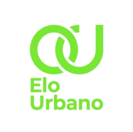

A Solução SustentávelO Elo Urbano conecta consumidores a pequenos comerciantes, produtores e prestadores de serviço da sua região — com geolocalização, catálogo digital e zero burocracia.
O Projeto
O Elo Urbano nasce como resposta a uma realidade que afeta milhões de brasileiros: pequenos negócios invisíveis no mundo digital e consumidores que não sabem que a solução está a poucos quarteirões de distância.
Sem intermediários. O consumidor encontra o produtor e faz contato diretamente, preservando a relação humana do comércio local.
Geolocalização inteligente que prioriza negócios próximos a você. Fortaleça a economia da sua comunidade.
Alinhado aos ODS da ONU: reduz desigualdades e promove ecossistemas econômicos locais mais justos.
O Diagnóstico
Grandes plataformas dominam o ambiente digital com alto investimento em marketing, enquanto pequenos negócios dependem quase exclusivamente do boca a boca — limitando seu alcance.
Do outro lado, consumidores que desejam apoiar o comércio local não encontram canais práticos. Acabam recorrendo a grandes aplicativos por pura praticidade.
"Pouca visibilidade, baixa demanda, não sei como anunciar meu produto." — João, padeiro local
Lacuna de conexão
A Solução
O Elo Urbano funciona como vitrine digital para pequenos negócios e guia de descoberta para consumidores — com foco em visibilidade e conexão direta.
Com CPF, data de nascimento e documentos, o comerciante cria seu perfil completo na plataforma.
Sobe catálogo, define horários, localização e canais de contato em sua vitrine digital.
Pelo mapa ou busca, o consumidor encontra negócios próximos e entra em contato diretamente.
A economia local se fortalece. Mais visibilidade, mais vendas, mais impacto social.
Usuários
Trabalha na padaria da família e quer expandir as vendas além do boca a boca do bairro.
Vender mais com maior visibilidade para seus produtos artesanais.
Moradora do bairro que quer apoiar o comércio local, mas não sabe onde encontrá-los.
Descobrir produtores e serviços locais da sua cidade com facilidade.
Faça Parte
Seja como pequeno comerciante que quer mais visibilidade, consumidor que valoriza o local, ou parceiro que acredita no impacto social — entre em contato.